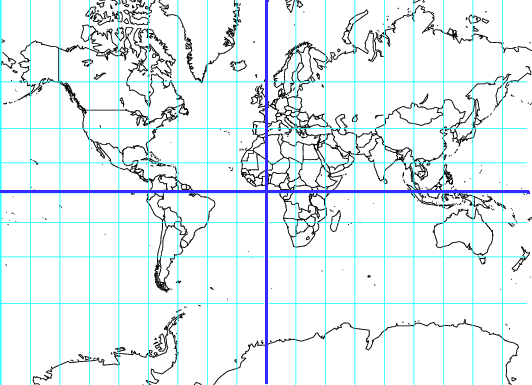
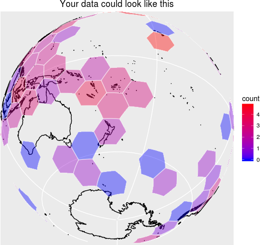

Spatial Analysis Done Right
You want to do spatial statistics, and it’s going to involve binning.
Binning with a rectangular grid introduces messy distortions. At the macro-scale using a rectangular grid does things like making Greenland bigger than the United States and Antarctica the largest continent.

But this kind of distortion is present no matter what the resolution is; in fact, it shows up whenever you project a sphere onto a plane.
What you want are bins of equal size, regardless of where they are on the globe, regardless of their resolution.
dggridR solves this problem.
dggridR builds discrete global grids which partition the surface of the Earth into hexagonal, triangular, or diamond cells, all of which have the same size. (There are some minor caveats which are detailed in the vignettes.)

(Naturally, you can use much smaller cells than those shown in the image above.)
This package includes everything you need to make spatial binning great again.
Many details and examples are included in the vignette.
Installation
dggridR is available from CRAN via:
If you want your code to be as up-to-date as possible, you can install it using:
Show me some code
Okay.
Your analysis could be as easy as this:
library(dggridR)
library(collapse)
#Construct a global grid with cells approximately 1000 miles across
dggs <- dgconstruct(spacing=1000, metric=FALSE, resround='down')
#Load included test data set
data(dgquakes)
#Get the corresponding grid cells for each earthquake epicenter (lat-long pair)
dgquakes$cell <- dgGEO_to_SEQNUM(dggs, dgquakes$lon, dgquakes$lat)$seqnum
#Get the number of earthquakes in each equally-sized cell
quakecounts <- dgquakes |> fcount(cell)But I want higher resolution grids than that
Many different grid resolutions are available for many different grids. The following chart shows the number of cells, their area, and statistics regarding the spacing of their center nodes for the ISEA3H grid type.
| Res | Number of Cells | Cell Area (km^2) | Min | Max | Mean | Std |
|---|---|---|---|---|---|---|
| 1 | 32 | 17,002,187.39080 | 4,156.18000 | 4,649.10000 | 4,320.49000 | 233.01400 |
| 2 | 92 | 5,667,395.79693 | 2,324.81000 | 2,692.72000 | 2,539.69000 | 139.33400 |
| 3 | 272 | 1,889,131.93231 | 1,363.56000 | 1,652.27000 | 1,480.02000 | 89.39030 |
| 4 | 812 | 629,710.64410 | 756.96100 | 914.27200 | 855.41900 | 52.14810 |
| 5 | 2,432 | 209,903.54803 | 453.74800 | 559.23900 | 494.95900 | 29.81910 |
| 6 | 7,292 | 69,967.84934 | 248.80400 | 310.69300 | 285.65200 | 17.84470 |
| 7 | 21,872 | 23,322.61645 | 151.22100 | 187.55000 | 165.05800 | 9.98178 |
| 8 | 65,612 | 7,774.20548 | 82.31100 | 104.47000 | 95.26360 | 6.00035 |
| 9 | 196,832 | 2,591.40183 | 50.40600 | 63.00970 | 55.02260 | 3.33072 |
| 10 | 590,492 | 863.80061 | 27.33230 | 35.01970 | 31.75960 | 2.00618 |
| 11 | 1,771,472 | 287.93354 | 16.80190 | 21.09020 | 18.34100 | 1.11045 |
| 12 | 5,314,412 | 95.97785 | 9.09368 | 11.70610 | 10.58710 | 0.66942 |
| 13 | 15,943,232 | 31.99262 | 5.60065 | 7.04462 | 6.11367 | 0.37016 |
| 14 | 47,829,692 | 10.66421 | 3.02847 | 3.90742 | 3.52911 | 0.22322 |
| 15 | 143,489,072 | 3.55473 | 1.86688 | 2.35058 | 2.03789 | 0.12339 |
| 16 | 430,467,212 | 1.18491 | 1.00904 | 1.30335 | 1.17638 | 0.07442 |
| 17 | 1,291,401,632 | 0.39497 | 0.62229 | 0.78391 | 0.67930 | 0.04113 |
| 18 | 3,874,204,892 | 0.13166 | 0.33628 | 0.43459 | 0.39213 | 0.02481 |
| 19 | 11,622,614,672 | 0.04389 | 0.20743 | 0.26137 | 0.22643 | 0.01371 |
| 20 | 34,867,844,012 | 0.01463 | 0.11208 | 0.14489 | 0.13071 | 0.00827 |
Credits
The code in the ‘src’ directory is based off of DGGRIDv9.0b by Kevin Sahr.
However, Richard Barnes has made some significant alterations. These include:
- Replacement of gpclib with clipper, thus making DGGRID into FLOSS software available for both commercial and non-commercial use without restriction
- Restructuring and simplifying all of the makefiles to enable compilation in R
- Direct inclusion of the shapelib library
- Addition of the SEQTOPOLY option under the GENERATE_GRID faculty
- Alterations that enable the code to be compiled under GCC6
- Alterations that make the code ISO C conformant
- Alterations to resolve -pedantic and -Wall warnings
The package relies on several libraries, as noted in the Licensing section below.
Licensing
This package uses the following libraries:
clipper: The clipper library has been released under the Boostv1 license by Angus Johnson
dggrid: Kevin Sahr has released dggrid as a “public domain software program”
proj4lib: Gerald Evenden has released this code into the public domain. More recent versions of the library, not used here, are under an MIT-style license.
shapelib: Frank Warmerdam has released shapelib under an MIT-style license. There is also an LGPL licensing option which I have chosen not to use.
This package, and all code and documentation not otherwise mentioned above (essentially anything outside the src/ directory of this package) are released under the MIT (Expat) license, as stated in the LICENSE file. The LICENCE file exists for use with CRAN.
Disclaimer
This package should operate in the manner described here, in the package’s main documentation, and in Kevin Sahr’s dggrid documentation. Unfortunately, none of us are paid enough to make absolutely, doggone certain that that’s the case. That said, if you find bugs or are seeking enhancements, we want to hear about them.
Citing this Package
Please cite this package as:
Richard Barnes, Kevin Sahr, and Sebastian Krantz (2026). dggridR: Discrete Global Grids for R. R package version 4.0.0. “https://github.com/r-barnes/dggridR/” doi:10.5281/zenodo.1322866